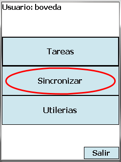
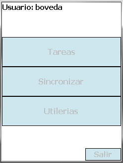
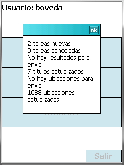

Acerca de la sincronización[inicio]
El proceso de sincronización, además de actualizar información en el móvil actualiza también información en el servidor central. Para asegurar que la actualización de la información tanto en el móvil como en el servidor central sea confiable y consistente se tomaron tres precauciones (con una excepción *):
- El usuario de la aplicación móvil debe estar autenticado
- El dispositivo móvil debe estar registrado
- Cada paso de actualización se hace completo o no se hace, es decir, si ocurre algún error a la mitad de alguna actualización la base de datos se regresa al estado previo a la actualización
* La actualización de los usuarios en el móvil sólo aplica los pasos 2 y 3
Pasos ejecutados en la sincronización[inicio]
La sincronización se ejecuta desde el menú de inicio presionando el botón Sincronizar. Hecho esto la aplicación establece comunicación con el servidor y realiza las actualizaciones detalladas más adelante. Una vez teriminado el proceso se muestra un mensaje con el resumen con los resultados, y si hubo algún error, este se muestra en un segundo mensaje.



- Tareas La aplicación móvil solicita las tareas nuevas asignadas al usuario actual. Desde el servidor se envía la lista de tarea asignadas al usuario que no hayan sido sincronizadas aún. Si alguna tarea previamente sincronizada fue cancelada, se envía también para que ésta sea eliminada del móvil.
- Resultados La aplicación móvil envía al servidor las tareas ejecutadas y marcadas como terminadas. El servidor verifica que los resultados recibidos correspondan al usuario y móvil y actualiza la base con los datos recibidos.
- Títulos Una vez recibidas las tareas y entregados los resultados, se actualiza la lista de los títulos que corresponden a las tareas recibidas. Esto se hace así por eficiencia, debido a que el catálogo de títulos se volverá muy grande haciendo que el proceso de sincronización tome demasiado tiempo.
- Actualización de espacios Para en un futuro llevar un mejor control del espacio disponible en las bóvedas se tiene registrado la cantidad de contenedores que pueden alojarse en cada nicho (esta cantidad depende del tipo de contenedor). Por ello la aplicación móvil cuenta los espacios ocupados o liberados con la ejecución de las tareas y entrega esta información al servidor.
- Nichos Para realizar la cuenta de los espacios, la aplicación móvil solicita la lista de nichos de las bóvedas asignadas a las tareas recibidas.